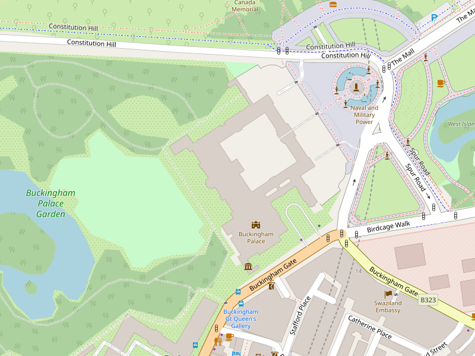

<ons-page>
  <ons-toolbar style="background-color: #000000">
    <div class="left" style="width: 50px">
      <ons-toolbar-button onclick="fn.open()">
        <ons-icon icon="fa-info" size="40px"></ons-icon>
      </ons-toolbar-button>
    </div>
    <div class="center"></div>
    <div class="right" style="width: 50px">
      <ons-toolbar-button icon="fa-user" size="40px" onclick="fn.gotoPage('accesso.html')"></ons-toolbar-button>
    </div>
  </ons-toolbar>
    <ons-card>
      
      <br><br>
      <div class="content"  style="background-color:'#FFFFFF'">
        Link per download mappa offline (...Mb)
      </div>
    </ons-card>
</ons-page>
